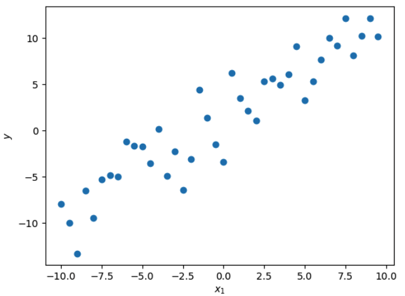
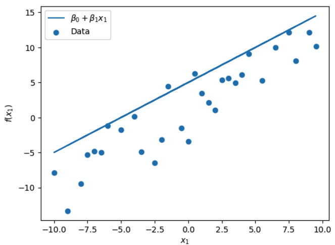
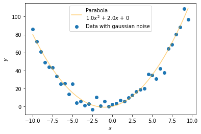
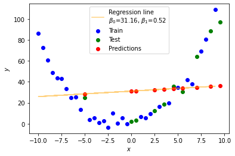
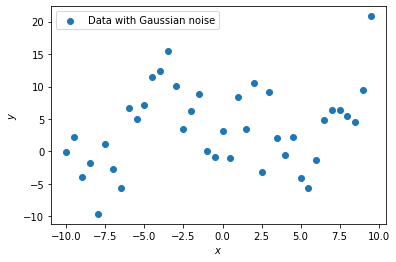
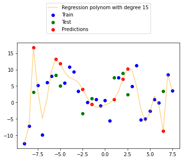

Lineær og polynomisk regresjon
Nå skal vi predikere tall i stedet for klasser. Det krever en ny tapsfunksjon (MSE), nye gradienter og et triks som lar en «lineær» modell tegne kurver. Mye kjenner du igjen fra logistisk regresjon, og det er nettopp poenget.
Etter dette kapittelet skal du kunne
- skille regresjon fra klassifisering og tolke $\beta_0$ og $\beta_1$ i en lineær modell
- forklare hvorfor vi bruker MSE, hva faktoren $\tfrac12$ gjør, og hvorfor kvadratet er naturlig (maksimal likelihood under gaussisk støy)
- utlede $\partial L/\partial\beta_0$ og $\partial L/\partial\beta_1$, og regne ut gradienter og oppdaterte parametre for hånd
- bruke kontrollspørsmål til å sjekke fortegnet på gradienten
- forklare polynomisk regresjon som feature engineering, og hvorfor modellen fortsatt er lineær
- se på polynomgraden som en hyperparameter som styrer under- og overtilpasning
- svare på prosjekt 1-spørsmålene om formel, feilfordeling, forventningsrette estimatorer og gradienter nær null
6.1Fra klasser til tall
Hittil har target $y$ vært en kategori: overlevde eller ikke, syk eller frisk. Se på datasettet i figur 6.1. Her er $y$ fortsatt «riktig svar», så vi er fortsatt i veiledet læring. Men $y$ tilhører ingen forhåndsdefinerte kategorier. Det er et kontinuerlig tall.
Regresjon er veiledet læring der target er kontinuerlig. Modellen skal estimere én (eller flere) kontinuerlige verdier. Klassifisering er veiledet læring der target er en kategori.
Eksempler fra forelesningen: predikere skåren til en film, estimere verdien til en bolig, forutsi sykefraværet til en ansatt. Andre eksempler: temperatur i morgen, strømforbruket til et datasenter (prosjekt 1), levetiden til et batteri.


«Logistisk regresjon» er en klassifiseringsmetode, selv om den har «regresjon» i navnet. Den gir ut en sannsynlighet, men den brukes til å velge klasse. Avgjørende er hva target er: kategori → klassifisering, kontinuerlig tall → regresjon.
Hvilke av disse er regresjonsoppgaver?
- Avgjøre om en e-post er spam eller ikke
- Estimere salgsprisen til en leilighet i kroner
- Bruke logistisk regresjon til å avgjøre om en svulst er ondartet
- Forutsi hvor mange sykedager en ansatt får neste år
- Predikere gjennomsnittlig terningkast en film får på IMDb-skalaen 1–10
- Gjenkjenne hvilket siffer (0–9) som står på et bilde
6.2Den lineære modellen
Den enkleste regresjonsmodellen er en lineær modell:
Lineær regresjonsmodell (likning 50 i notatene)
$$f(x)=\beta_0+\beta_1x_1+\beta_2x_2+\dots+\beta_nx_n = \beta_0 + \sum_{i=1}^{n}\beta_i x_i$$Modellen har én parameter $\beta_i$ per feature $x_i$ (én per kolonne i datasettet) og i tillegg $\beta_0$, som kalles bias eller skjæringspunkt (intercept). Med $n$ features får vi altså $n+1$ parametre. Formen er den samme som $z=w^\top x+b$ i logistisk regresjon. Notatene bytter bare navn til $\beta$ for å skille de to tilfellene.
Med bare én feature blir modellen en rett linje:
- $\beta_0$ (bias, baseline): forflytter alle prediksjonene med en konstant. Tenk på den som en grunnverdi modellen gir før den har sett på noen features. Med $x_1=0$ er prediksjonen $\beta_0$.
- $\beta_1$ (stigningstall): justerer grunnverdien ut fra featureverdien. Er $\beta_1=3$, øker prediksjonen med 3 for hver enhet $x_1$ øker.
Taxiprisen: startgebyr + pris per km · antall km. Startgebyret er $\beta_0$ (du betaler det selv om du kjører 0 km), og kilometerprisen er $\beta_1$. Flere features, som minuttpris og nattillegg, gir flere $\beta$-er som hver legger til sitt bidrag.
Den er enkel, rask å trene og lett å tolke: $\beta_i$ sier direkte hvor mye feature $x_i$ betyr (hvis featurene er på samme skala). Prisen er en sterk induktiv bias: modellen antar at hver feature bidrar additivt og med et fast stigningstall. Den antar også at featurene ikke påvirker hverandres effekt, altså at det ikke finnes vekselvirkninger.
«Hvilken antakelse gjør en lineær modell $y=w_1x_1+w_2x_2+w_3x_3+b$?» Riktig svar var at det ikke er vekselvirkninger mellom features. Effekten av $x_1$ er alltid $w_1$, uansett hva $x_2$ er.
Et datasett for boligpriser har 5 features (areal, antall rom, byggeår, avstand til sentrum, etasje). Hvor mange parametre har en lineær regresjonsmodell for dette datasettet?
- 5
- 6
- 10
- 25
En modell for strømforbruk (kWh) er $f(x)=120+0{,}8x$, der $x$ er antall aktive servere. Hva betyr tallet 120?
- Predikert forbruk når det er null aktive servere, altså grunnforbruket som alle prediksjoner bygger på
- Forbruket øker med 120 kWh for hver ekstra server
- Modellen har 120 parametre
- Gjennomsnittlig avvik mellom modell og data
Du modellerer avlingen til en åker som $f(x)=\beta_0+\beta_1\cdot\text{vann}+\beta_2\cdot\text{gjødsel}$. En agronom sier at gjødsel bare hjelper når det er nok vann. Hva er problemet?
- Modellen har for høy varians
- Modellen antar at effekten av gjødsel er den samme uansett vannmengde, altså ingen vekselvirkning
- Modellen antar at gjødsel og vann er like viktige
- Ingenting. En lineær modell fanger slike sammenhenger automatisk
6.3Tapsfunksjonen: mean squared error
Vi trener modellen på samme måte som før, med gradient descent, og mye av koden fra logistisk regresjon kan gjenbrukes. Notatene spør hva vi ikke kan gjenbruke.
Tapsfunksjonen. Cross-entropy (log loss) måler hvor god en sannsynlighet for riktig klasse er, og forutsetter $y\in\{0,1\}$ og $\hat y\in(0,1)$. Nå er $y$ et vilkårlig tall, for eksempel $-6{,}4$ eller $98{,}7$, og $\log(\hat y)$ gir ikke mening. Vi trenger et nytt mål på avstanden mellom prediksjon og fasit. Modellen, gradient descent og treningsløkka kan gjenbrukes.
Den vanligste tapsfunksjonen (loss function) for regresjon er mean squared error:
MSE (likning 51 i notatene)
$$L = \text{MSE}=\frac{1}{2N}\sum_{i=1}^{N}\Big(y^{(i)}-f\big(x^{(i)}\big)\Big)^2$$Summen går over alle $N$ datapunktene (radene). For hvert punkt regner vi avviket mellom fasit og prediksjon, kvadrerer det og tar gjennomsnittet. MSE er liten når prediksjonene ligger nær fasit og stor når de bommer.
Faktoren ½
Faktoren $\tfrac12$ er bare for bekvemmelighet (convenience). Når vi deriverer $(\dots)^2$, kommer det ned en 2-er som kansellerer $\tfrac12$, og gradienten blir penere. Den endrer ikke hvor minimum ligger, for å gange en funksjon med en positiv konstant flytter ikke bunnpunktet. Mange definisjoner (blant annet sklearn.metrics.mean_squared_error) har den ikke med. Sjekk derfor alltid hvilken definisjon oppgaven bruker. Uten $\tfrac12$ blir tallet dobbelt så stort.
Hvorfor akkurat kvadratet?
Vi kunne brukt absoluttverdien $|y-f(x)|$ eller fjerde potens. Kvadratet har tre gode grunner:
Kvadratet gjør MSE følsom for uteliggere (outliers). Ett punkt som ligger 20 enheter unna, bidrar med 400, og det kan dra linja mot seg. Det er prisen for punkt 1. Hvis datasettet har mange uteliggere, kan absolutt feil (MAE) være bedre.
MSE = maksimal likelihood under gaussisk støy
Intuisjonen: Anta at data kommer fra en sann linje pluss tilfeldig støy, $y=f(x)+\varepsilon$, der $\varepsilon$ er normalfordelt med forventning 0. En normalfordeling gjør små avvik vanlige og store avvik svært sjeldne, og sannsynlighetstettheten faller som $e^{-(\text{avvik})^2}$. Den mest sannsynlige modellen er den som gjør de observerte avvikene minst mulig «overraskende». Det betyr å minimere summen av kvadrerte avvik. Kvadratet i MSE er rett og slett kvadratet i eksponenten til normalfordelingen.
Vis den korte matematiske begrunnelsen
Med gaussisk støy med varians $\sigma^2$ er sannsynlighetstettheten for én observasjon
$$p\big(y^{(i)}\mid x^{(i)}\big)=\frac{1}{\sqrt{2\pi\sigma^2}}\exp\!\left(-\frac{\big(y^{(i)}-f(x^{(i)})\big)^2}{2\sigma^2}\right).$$Datapunktene er uavhengige, så likelihooden er produktet. Vi tar logaritmen, som gjør produktet til en sum:
$$\log \mathcal{L}=\sum_{i=1}^N \log p\big(y^{(i)}\mid x^{(i)}\big) = -N\log\sqrt{2\pi\sigma^2}\;-\;\frac{1}{2\sigma^2}\sum_{i=1}^N\big(y^{(i)}-f(x^{(i)})\big)^2 .$$Første ledd avhenger ikke av $\beta$. I andre ledd står det minus en positiv konstant ganger kvadratsummen. Å maksimere $\log\mathcal L$ er derfor det samme som å minimere $\sum (y-f(x))^2$, altså MSE. Konstanten $\tfrac{1}{2N}$ foran spiller ingen rolle for hvor minimum ligger.
Sammenlign med logistisk regresjon: Der antok vi at $y$ var Bernoulli-fordelt, og maksimal likelihood ga cross-entropy. Samme oppskrift, ny fordeling, ny tapsfunksjon.
«Hvorfor er MSE et naturlig valg under standardantakelsene for lineær regresjon?» Riktig: fordi å minimere MSE tilsvarer å maksimere likelihood under gaussisk støy. Distraktorene var at man slipper deriverte (feil, vi deriverer MSE), at MSE gir sparse parametre (det gjør L1/Lasso) og at uteliggere får liten innflytelse (motsatt, de får stor innflytelse).
Du har kode for logistisk regresjon med gradient descent og vil tilpasse den til lineær regresjon. Hva må endres?
- Gradient descent må byttes ut med en annen optimeringsmetode
- Tapsfunksjonen (og dermed gradientene), og sigmoid fjernes fra prediksjonen
- Ingenting. Koden fungerer direkte på kontinuerlige targets
- Antall parametre må dobles
Hva er hensikten med faktoren $\tfrac12$ i $\text{MSE}=\frac{1}{2N}\sum(y^{(i)}-f(x^{(i)}))^2$?
- Den halverer straffen for store avvik, så modellen blir mer robust mot uteliggere
- Den sørger for at MSE alltid ligger mellom 0 og 1
- Den kompenserer for at vi har to parametre, $\beta_0$ og $\beta_1$
- Den kansellerer 2-eren fra derivasjonen av kvadratet, så gradienten blir enklere. Minimum flyttes ikke
Hvilke er gode grunner til å kvadrere avvikene i MSE?
- Store avvik straffes uforholdsmessig mye
- Det gjør modellen robust mot uteliggere
- Tapet blir deriverbart overalt, noe gradient descent trenger
- Å minimere kvadratsummen er maksimal likelihood når støyen er gaussisk
- Det gjør at mange parametre blir nøyaktig 0
Modellen $f(x)=1+2x$ testes på tre punkter: $(0,\,1)$, $(1,\,2)$ og $(2,\,5)$. Regn ut MSE med definisjonen $\frac{1}{2N}\sum(y-f(x))^2$. Oppgi med fire desimaler.
$\text{MSE}=\frac{1}{2\cdot 3}\cdot 1=\frac16\approx 0{,}1667$. (Uten $\tfrac12$ ville svaret vært $\tfrac13\approx0{,}333$.)
Er MSE = 960 høyt?
Notatene stiller spørsmålet etter å ha tilpasset en rett linje til parabeldata (figur 6.5 under): «Min modells MSE ligger rundt 960. Er det høyt eller lavt?» Svaret er at MSE i seg selv ikke har noen absolutt skala. Den har enheten til $y$ i annen. Måler du priser i kroner i stedet for millioner, blir MSE $10^{12}$ ganger større uten at modellen er dårligere.
For å tolke tallet sammenligner vi med størrelsen på targets. Ta kvadratroten, så du er tilbake i samme enhet som $y$. Det kalles RMSE (root mean squared error):
I notatenes eksempel er gjennomsnittet av targets omtrent 28 og gjennomsnittet av prediksjonene omtrent 32. Et typisk avvik på rundt 30 er altså like stort som verdiene selv ($30^2=900$). Det er et stort tap. Modellen er nesten ubrukelig.
MSE er i «kvadratkroner», RMSE er i kroner. Vil du vite om en feil er stor, må den uttrykkes i samme enhet som det du predikerer, og sammenlignes med hvor store og hvor spredte targets er. Et nyttig referansepunkt er modellen som bare predikerer gjennomsnittet av $y$. Dens MSE er variansen til $y$. En modell som ikke slår den, har ikke lært noe.
En boligprismodell har MSE (uten $\tfrac12$) lik $0{,}25$ når prisene måles i millioner kroner. Hvor stor er RMSE, i millioner kroner?
6.4Gradientene og oppdateringsreglene
For å bruke gradient descent trenger vi de partiellderiverte av tapet med hensyn på hver parameter. Med én feature er $f(x)=\beta_0+\beta_1x$ og
Utledning av $\partial L/\partial\beta_0$ og $\partial L/\partial\beta_1$, steg for steg
Steg 1: Derivasjon er lineær. Den deriverte av en sum er summen av de deriverte, og konstanten $\tfrac{1}{2N}$ blir stående:
$$\frac{\partial L}{\partial\beta_0}=\frac{1}{2N}\sum_{i=1}^{N}\frac{\partial}{\partial\beta_0}\big(y^{(i)}-\beta_1x^{(i)}-\beta_0\big)^2 .$$Steg 2: Kjerneregelen. Kall det indre uttrykket $u=y^{(i)}-\beta_1x^{(i)}-\beta_0$. Da er $\frac{\partial}{\partial\beta_0}u^2=2u\cdot\frac{\partial u}{\partial\beta_0}$, og $\frac{\partial u}{\partial\beta_0}=-1$.
$$\frac{\partial}{\partial\beta_0}u^2=2\big(y^{(i)}-\beta_1x^{(i)}-\beta_0\big)\cdot(-1)=2\big(\beta_1x^{(i)}+\beta_0-y^{(i)}\big).$$Steg 3: Sett inn. 2-eren kansellerer $\tfrac12$. Det er derfor faktoren er der:
$$\boxed{\frac{\partial L}{\partial\beta_0}=\frac1N\sum_{i=1}^{N}\big(\beta_1x^{(i)}+\beta_0-y^{(i)}\big)=\frac1N\sum_{i=1}^{N}\big(f(x^{(i)})-y^{(i)}\big)}$$Steg 4: Samme for $\beta_1$. Nå er $\frac{\partial u}{\partial\beta_1}=-x^{(i)}$, så vi får en ekstra faktor $x^{(i)}$:
$$\boxed{\frac{\partial L}{\partial\beta_1}=\frac1N\sum_{i=1}^{N}x^{(i)}\big(\beta_1x^{(i)}+\beta_0-y^{(i)}\big)=\frac1N\sum_{i=1}^{N}x^{(i)}\big(f(x^{(i)})-y^{(i)}\big)}$$Tolkning: $f(x^{(i)})-y^{(i)}$ er feilen (residualen) for punkt $i$. Gradienten for $\beta_0$ er gjennomsnittsfeilen. Gradienten for $\beta_1$ er gjennomsnittsfeilen vektet med $x$. Punkter med stor $|x|$ har mest å si for stigningstallet.
Gradient descent går et steg med lengde $\eta$ (læringsraten) mot gradienten:
Oppdateringsregler (likning 56 i notatene)
$$\beta_0\leftarrow\beta_0-\eta\,\frac1N\sum_{i=1}^{N}\big(f(x^{(i)})-y^{(i)}\big)\qquad \beta_1\leftarrow\beta_1-\eta\,\frac1N\sum_{i=1}^{N}x^{(i)}\big(f(x^{(i)})-y^{(i)}\big)$$«Feil ganger input». Gradienten for en vekt er alltid (prediksjon − fasit) · (det vekten ganges med). For $\beta_0$ ganges den med 1, for $\beta_1$ med $x$. Den samme formen dukker opp i logistisk regresjon og i det siste laget av et nevralt nett. Kan du den, kan du regne alle eksamensoppgaver av denne typen.
Kontrollspørsmål: gir fortegnet mening?
Se igjen på figur 6.1b. Modellen overestimerer konsekvent for alle $x_1$. Tenk selv før du åpner svaret: Er $\beta_0$ for høy eller for lav? Er $\partial L/\partial\beta_0$ større eller mindre enn 0?
Modellen i figur 6.1b ligger over nesten alle datapunktene. Hva gjelder for $\beta_0$ og $\partial L/\partial\beta_0$?
- $\beta_0$ er for lav, og $\partial L/\partial\beta_0\lt 0$
- $\beta_0$ er for høy, og $\partial L/\partial\beta_0\lt 0$
- $\beta_0$ er for høy, og $\partial L/\partial\beta_0\gt 0$
- $\beta_0$ er riktig, det er bare $\beta_1$ som er feil
Notatene spør: «Hvilken tilsvarende sjekk kan vi gjøre for $\beta_1$?» Beskriv en situasjon der $\beta_1$ åpenbart er for stor, og forklar hvilket fortegn $\partial L/\partial\beta_1$ da får.
En nyanse: Hvis modellen overestimerer like mye overalt, og $x$-verdiene er symmetriske rundt 0 (som i figur 6.1), blir $\sum x(f-y)\approx 0$. Da er det bare $\beta_0$ som korrigeres. Hvis alle $x$ er positive, vil en ren forskyvning også gi $\partial L/\partial\beta_1\gt0$. Parametrene «deler på skylden», og det er en grunn til at det hjelper å sentrere eller standardisere features.
Regneeksempel med tall (eksamensformat)
Modell $f(x)=wx+b$, tap $\mathcal L=\tfrac12(y-f(x))^2$ for ett datapunkt, startverdier $w=1$, $b=0$, punkt $x=2$, $y=4$, læringsrate $\alpha=0{,}1$. Beregn gradientene og de oppdaterte parametrene. Her er $w=\beta_1$ og $b=\beta_0$.
Løsning av eksamensoppgaven
Prediksjon: $f(2)=1\cdot2+0=2$. Feil: $f-y=2-4=-2$.
$\dfrac{\partial\mathcal L}{\partial w}=x\,(f-y)=2\cdot(-2)=-4$, og $\dfrac{\partial\mathcal L}{\partial b}=f-y=-2$.
Oppdatering: $w\leftarrow 1-0{,}1\cdot(-4)=1{,}4$ og $b\leftarrow 0-0{,}1\cdot(-2)=0{,}2$.
Sjekk med sunn fornuft: Modellen underestimerte (2 mot 4), så begge gradientene er negative og begge parametrene økes. Ny prediksjon: $1{,}4\cdot2+0{,}2=3{,}0$, nærmere 4. Distraktorene på eksamen var fortegnsfeil ($+4$, $+2$), å glemme faktoren $x$ ($\partial\mathcal L/\partial w=-2$) og å oppdatere i feil retning ($w=0{,}6$, $b=-0{,}2$).
Ny modell: $f(x)=\beta_0+\beta_1x$ med $\beta_0=1$, $\beta_1=2$. Tapet er $L=\tfrac12(y-f(x))^2$ for ett datapunkt $x=3$, $y=4$. Hva er $\partial L/\partial\beta_1$?
$\partial L/\partial\beta_1=x\,(f-y)=3\cdot3=9$. (Og $\partial L/\partial\beta_0=3$.) Positivt fortegn, fordi modellen overestimerer.
Fortsett med samme punkt og læringsrate $\eta=0{,}1$. Hva blir den oppdaterte verdien av $\beta_0$?
Start i $\beta_0=0$, $\beta_1=0{,}5$. Datapunkt $x=4$, $y=5$, tap $\tfrac12(y-f)^2$, læringsrate $\eta=0{,}05$. Hva blir oppdatert $\beta_1$?
$\partial L/\partial\beta_1=4\cdot(-3)=-12$, og $\beta_1\leftarrow0{,}5-0{,}05\cdot(-12)=0{,}5+0{,}6=1{,}1$.
(Tilsvarende $\partial L/\partial\beta_0=-3$ og $\beta_0\leftarrow0+0{,}15=0{,}15$.)
Nå med hele datasettet (batch). To punkter: $(x,y)=(1,\,3)$ og $(3,\,5)$. Modell $\beta_0=1$, $\beta_1=1$, tap $L=\frac{1}{2N}\sum(y-f)^2$. Hva er $\partial L/\partial\beta_1$?
$\partial L/\partial\beta_1=\frac12\big(1\cdot(-1)+3\cdot(-1)\big)=\frac{-4}{2}=-2$.
$\partial L/\partial\beta_0=\frac12(-1-1)=-1$. Med $\eta=0{,}1$: $\beta_0=1{,}1$ og $\beta_1=1{,}2$. Legg merke til at vi tar gjennomsnittet over punktene, slik formelen sier.
I et treningssteg er $\partial L/\partial\beta_1=-4$ og $\eta=0{,}1$. Hva skjer med $\beta_1$?
- Den synker med 0,4
- Den øker med 0,4
- Den øker med 4
- Den blir $-0{,}4$
Gradient descent i parameterrommet
Tapet $L(\beta_0,\beta_1)$ er en funksjon av to variabler, en «skål» over $(\beta_0,\beta_1)$-planet. For lineær regresjon med MSE er skålen en ekte paraboloide: konveks, med ett eneste minimum. Det betyr at gradient descent, med passe liten læringsrate, alltid finner det globale minimumet.
Features på ulik skala gir avlange konturer. Læringsraten må velges etter den bratteste retningen, så den slake retningen går nesten ikke framover. Det er derfor skalering av features er viktig for gradientbaserte modeller (og ikke for trær, se tabell 8 i kapittel 7).
«I hvilket tilfelle vet vi at gradient descent vil finne et globalt minimum?» Riktig: konvekse funksjoner. «Lineær regresjon» var en distraktor. MSE for lineær regresjon er konveks, men det er konveksiteten som er grunnen, og også da kreves en passende læringsrate.
Du trener lineær regresjon med gradient descent på rå data der $x$ går fra $-10$ til $10$. Med $\eta=0{,}08$ vokser tapet for hver epoke og eksploderer. Hva er den beste forklaringen?
- Læringsraten er for stor for den bratteste retningen (styrt av $x^2$), så stegene skyter over og vokser
- MSE har flere lokale minima, og algoritmen havnet i feil minimum
- Læringsraten er for liten, så algoritmen står stille
- Modellen har for få parametre til å tilpasse dataene
Hvorfor er vi trygge på at gradient descent for lineær regresjon med MSE ender i det globale minimumet (med passende $\eta$)?
- Fordi MSE er en konveks funksjon av $\beta$-ene, en skål med ett bunnpunkt
- Fordi vi starter med $\beta=0$
- Fordi faktoren $\tfrac12$ garanterer det
- Fordi gradienten alltid er positiv
6.5Polynomisk regresjon og feature engineering
Se på figur 6.5a. Den oransje kurven er den sanne fordelingen, en parabel, og de blå punktene er trukket fra den med gaussisk støy.


Notatene spør: Hvor godt vil lineær regresjon fungere for å predikere $y$ for nye $x$ i figur 6.5a? Formuler svaret ved hjelp av antakelsen som ligger i lineær regresjon.
Trikset: lag en ny feature
Ved å plotte dataene ser vi at de ligner et andregradspolynom. Den enkleste løsningen er å lage en ny feature ved å transformere $x$ polynomisk: $x\to x^2$. Det kalles feature engineering. Nå har vi to features $\{x_1,x_2\}=\{x,\,x^2\}$, og vi gjør vanlig lineær regresjon med to features:
Likning 58 i notatene
$$y=\beta_0+\beta_1x_1+\beta_2x_2=\beta_0+\beta_1x+\beta_2x^2$$«Lineær» betyr lineær i parametrene. Prediksjonen er en vektet sum $\beta_0\cdot1+\beta_1\cdot x_1+\beta_2\cdot x_2$. At $x_2$ tilfeldigvis er $x^2$, vet ikke modellen noe om. For den er $x_2$ bare én kolonne til. MSE er fortsatt konveks i $\beta$, gradientene har samme «feil ganger input»-form, og all koden fungerer uendret. Kurven er krum i $x$, men flaten er flat i $(x_1,x_2)$-rommet.
Modellen er lineær, men brillene er krumme. Vi gir den lineære modellen et par briller ($x\mapsto(x,x^2,\dots)$) som bøyer verden slik at sammenhengen blir rett. Modellen gjør det den alltid har gjort. Det er dataene vi har forvandlet.
Generelt kan ett input $x$ utvides til et polynom av grad $M$:
Likning 59 i notatene
$$f(x)=\beta_0+\beta_1x+\beta_2x^2+\dots+\beta_Mx^M\qquad(M+1\text{ parametre})$$PolynomialFeatures: fit på trening, transform på test
I sklearn gjøres transformasjonen med PolynomialFeatures(degree=M). Regelen er den samme som for skalering:
.fit på testdata, fordi hele analysen skal være uavhengig av testdataene.from sklearn.preprocessing import PolynomialFeatures
from sklearn.linear_model import LinearRegression
poly = PolynomialFeatures(degree=2)
X_train_p = poly.fit_transform(X_train) # kolonner: 1, x, x²
X_test_p = poly.transform(X_test) # IKKE fit_transform her
model = LinearRegression().fit(X_train_p, y_train)
y_pred = model.predict(X_test_p)Å kalle fit_transform på testdata. For ren PolynomialFeatures på én kolonne gir det tilfeldigvis samme tall, men vanen er farlig. For skalering, PCA og lignende «lærer» .fit noe fra dataene (gjennomsnitt, standardavvik, retninger). Gjør du det på testdata, lekker informasjon fra testsettet inn i modellen, og testresultatet blir for optimistisk. (Eksamen 2024 oppg. 4 spurte om nettopp dette for en scaler: riktig var Scaler.transform(x_test) med en scaler tilpasset på treningsdataene.)
Tre typer feature engineering
Feature engineering er alle operasjoner vi gjør på datasettet før læringen. Det gjelder ikke bare regresjon og ikke bare veiledet læring. Notatene deler det i tre:
| Type | Hva | Eksempel fra kurset |
|---|---|---|
| Feature selection (utvelgelse) | Velge hvilke kolonner som skal være med | Droppe «Name» i Titanic-dataene |
| Feature preprocessing (preprosessering) | Endre skala eller representasjon av eksisterende features | Skalere «Age» til $(0,1)$ |
| Feature extraction (utvinning) | Lage nye features fra eksisterende, også ved å kombinere flere | Lage $x^2$ fra $x$, eller BMI fra høyde og vekt |
Modellen $f(x)=\beta_0+\beta_1x+\beta_2x^2+\beta_3x^3$ kalles fortsatt lineær regresjon. Hvorfor?
- Fordi kurven er tilnærmet rett for små $x$
- Fordi prediksjonen er en lineær kombinasjon av parametrene. Potensene av $x$ er bare nye features
- Fordi vi bare bruker én feature $x$
- Det er en misforståelse. Den er ikke-lineær regresjon og krever en annen tapsfunksjon
Du har laget poly = PolynomialFeatures(degree=3). Hva er riktig prosedyre?
poly.fit_transformpå hele datasettet førtrain_test_split, så trening og test får samme transformasjonpoly.fit_transformpå treningsdata og en nyPolynomialFeatures(3).fit_transformpå testdata- Transformere bare treningsdataene. Modellen lærer selv å håndtere rå testdata
poly.fit_transform(X_train), og deretterpoly.transform(X_test)med det samme objektet
Du har to features $x_1$ og $x_2$ og bruker PolynomialFeatures(degree=2) (med biaskolonnen). Hvor mange kolonner, og dermed parametre i den lineære modellen, får du?
Du lager featuren «areal per rom» ved å dele boligareal på antall rom. Hvilken type feature engineering er dette?
- Feature selection
- Feature preprocessing
- Feature extraction
- Det er ikke feature engineering, siden ingen kolonner fjernes
6.6Polynomgraden: hvor krum skal modellen være?
Figur 6.7 viser data fra et polynom av ukjent grad, med gaussisk støy. Hvilken grad bør vi velge?

Er det mulig å se fra dataene i figur 6.7 hvilken grad vi bør generere features til?



Høyere grad gir alltid lavere (eller lik) MSE på treningsdataene, fordi en modell med flere ledd kan gjøre alt en enklere modell kan, og mer. Men MSE på nye data blir først bedre og deretter verre. Både for lav og for høy kompleksitet er et problem.
Notatene spør: Er graden $M$ på polynomet vi transformerer features til en modellparameter, en hyperparameter eller en feature?
- En modellparameter, fordi den bestemmer formen på $f(x)$
- En hyperparameter, fordi den velges før treningen og ikke læres av gradient descent
- En feature, fordi den lager nye kolonner i datasettet
- En testparameter, fordi den velges ut fra test-MSE
Du tilpasser polynomer av grad 1, 3 og 15 til 30 treningspunkter med støy. Hvilket utsagn stemmer best?
- Grad 15 har lavest MSE både på trening og test, siden den er mest fleksibel
- Grad 1 har lavest trenings-MSE, fordi enkle modeller er mest stabile
- Alle tre gir omtrent samme test-MSE, siden de er trent med samme tapsfunksjon
- Grad 15 har lavest trenings-MSE, men trolig høyest test-MSE. Grad 1 har høy feil på begge
6.7Prosjekt 1: strømforbruk og nettverksaktivitet
Oppgaven var å implementere LinearRegression fra bunnen med gradient descent og predikere Energy fra Net_Activity. ❓-spørsmålene: Er tapskurven stabil? Utled formelen for energiforbruket. Analyser fordelingen av prediksjonsfeil, og hva er en forventningsrett estimator? Hva betyr det når gradienten i SGD er nær null?
Formelen
Datasettet har 1000 punkter med Net_Activity mellom 10 og 30. Minste kvadraters løsning (som gradient descent skal konvergere mot) er omtrent
Tolkning: Grunnforbruket er ca. 4,9 enheter, og hver ekstra enhet nettverksaktivitet koster ca. 3,0 enheter energi. Residualene har standardavvik ca. 2,0, så RMSE ≈ 2,0. Med targets mellom ca. 33 og 99 er det en god modell.
Bruk formelen $\widehat{\text{Energy}}=4{,}89+3{,}01\cdot\text{Net\_Activity}$. Hva er predikert energiforbruk når Net_Activity = 20?
Er tapskurven stabil?
Med rå Net_Activity (verdier 10–30) må læringsraten være liten, ellers oscillerer eller divergerer tapet (samme fenomen som i widgeten i 6.4). Med passende $\eta$, og gjerne standardiserte features, synker tapet monotont og flater ut. Det er en stabil kurve. Bruker du stokastisk eller mini-batch gradient descent, vil kurven ha litt støy, men trenden skal være nedadgående og flate ut.
Fordelingen av prediksjonsfeil og forventningsrette estimatorer
En estimator $\hat\theta$ for en størrelse $\theta$ er forventningsrett (unbiased) hvis $\mathbb E[\hat\theta]=\theta$. I gjennomsnitt, over mange tenkte gjentakelser, bommer den ikke systematisk i noen retning. For en prediksjonsmodell betyr det at prediksjonsfeilen $y-\hat y$ har forventning 0.
Hvis du lager et histogram over residualene $y^{(i)}-\hat y^{(i)}$ i prosjekt 1, ser du en klokkeformet fordeling sentrert rundt 0 med standardavvik ca. 2. Det passer med antakelsen om gaussisk støy (6.3). Sentreringen rundt 0 er ikke tilfeldig:
$\partial L/\partial\beta_0$ er gjennomsnittsfeilen. Når gradient descent har konvergert, er $\frac{\partial L}{\partial\beta_0}=\frac1N\sum(f(x^{(i)})-y^{(i)})=0$. Gjennomsnittlig residual på treningsdataene er da nøyaktig null. En modell med bias-ledd som er trent til minimum, er forventningsrett på treningsdataene.
Hva betyr det at gradienten er nær null?
Gradienten måler hvor mye tapet endrer seg når vi justerer parametrene. Er den nær null, gir små endringer ingen forbedring, og vi står i (nærheten av) et stasjonært punkt. For lineær regresjon med MSE er tapet konvekst, så det eneste stasjonære punktet er det globale minimumet. Modellen har konvergert, og videre trening hjelper ikke.
To forbehold: (1) I stokastisk gradient descent beregnes gradienten på ett punkt eller en mini-batch, så den varierer fra steg til steg selv i minimum. Se på gjennomsnittet over mange steg eller på full-batch-gradienten. (2) For ikke-konvekse modeller, som nevrale nett, kan en liten gradient også bety et lokalt minimum, et sadelpunkt eller et flatt platå. Liten gradient betyr ikke nødvendigvis «ferdig og optimalt», bare at tapet ikke endrer seg lokalt.
Hva betyr det at en estimator er forventningsrett (unbiased)?
- Den har lavest mulig varians blant alle estimatorer
- Den har ikke noe biasledd $\beta_0$
- Den gir nøyaktig riktig svar for hvert datapunkt
- Forventningsverdien til estimatet er lik den sanne verdien, så den bommer ikke systematisk i én retning
Under trening av lineær regresjon (full batch, MSE) blir $\|\nabla L\|$ svært liten og holder seg der. Hva er den beste tolkningen?
- Parametrene er nær minimum av tapet. Siden MSE er konveks, er det det globale minimumet, og videre trening endrer lite
- Modellen har overtilpasset og må stoppes
- Læringsraten er for stor
- Tapet er null, så modellen predikerer perfekt
Modell A predikerer temperatur i °C med MSE = 4. Modell B predikerer samme temperatur i °F og har MSE = 12. Hva kan du konkludere?
- A er tre ganger bedre enn B
- Du må gjøre om til samme enhet før du sammenligner. RMSE er 2 °C for A og ca. 3,5 °F ≈ 1,9 °C for B, så de er omtrent like gode
- B er bedre, fordi høyere MSE betyr mer informasjon
- MSE kan ikke brukes for temperatur
Du implementerer gradient descent i prosjekt 1 uten å skalere Net_Activity (10–30), og tapskurven hopper opp og ned og stiger etter hvert. Forklar hva som skjer og to måter å fikse det på.
Oppsummering
- Regresjon = veiledet læring med kontinuerlig target. Lineær modell $f(x)=\beta_0+\sum\beta_ix_i$ har $n+1$ parametre. $\beta_0$ er skjæringspunktet (baseline), og $\beta_i$ er stigningstall.
- Tapsfunksjonen må byttes: MSE $=\frac1{2N}\sum(y-f(x))^2$. $\tfrac12$ er for bekvemmelighet. Kvadratet straffer store feil, er deriverbart og gir maksimal likelihood under gaussisk støy (eksamen 2025). Det gjør MSE følsom for uteliggere.
- MSE har enheten $y^2$. Tolk den via RMSE sammenlignet med størrelsen på $y$. MSE ≈ 960 med targets rundt 28 er stort.
- Gradienter: $\partial L/\partial\beta_0=\frac1N\sum(f-y)$ og $\partial L/\partial\beta_1=\frac1N\sum x(f-y)$, altså «feil ganger input». Overestimering gir $\partial L/\partial\beta_0\gt0$, og $\beta_0$ senkes.
- MSE for lineær regresjon er konveks, så GD finner globalt minimum med passende $\eta$. Uskalerte features gir avlange konturer og krever liten $\eta$.
- Polynomisk regresjon = feature extraction ($x\to x,x^2,\dots,x^M$) etterfulgt av vanlig lineær regresjon. Modellen er lineær i parametrene.
fittransformasjonen på trening,transformtest. - Feature engineering: selection, preprocessing, extraction.
- Polynomgraden er en hyperparameter. Grad 1 undertilpasser, grad 15 overtilpasser. Trenings-MSE synker alltid med graden, men test-MSE har en dal.
- Forventningsrett estimator: $\mathbb E[\hat\theta]=\theta$. Når $\partial L/\partial\beta_0=0$, er gjennomsnittlig residual null. Gradient nær null betyr nær et stasjonært punkt, som for konveks MSE er minimum.